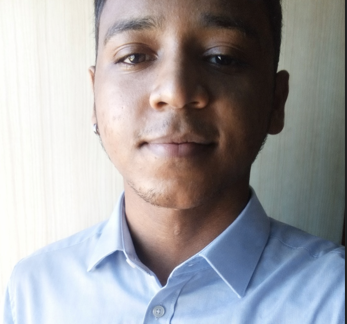

Atuo como Auxiliar Técnico de Laboratório no Departamento de Solos e como desenvolvedor, criando soluções tecnológicas para otimização de processos. Atualmente, curso Análise e Desenvolvimento de Sistemas pela Faculdade São Francisco de Assis e busco constante aprimoramento por meio de estudos externos, com foco em desenvolvimento Front-End .
ContatoAtuo como Auxiliar Técnico de Laboratório no Departamento de Solos e como desenvolvedor, criando soluções tecnológicas para otimização de processos. Atualmente, curso Análise e Desenvolvimento de Sistemas pela Faculdade São Francisco de Assis e busco constante aprimoramento por meio de estudos externos, com foco em desenvolvimento Front-End .
Contato